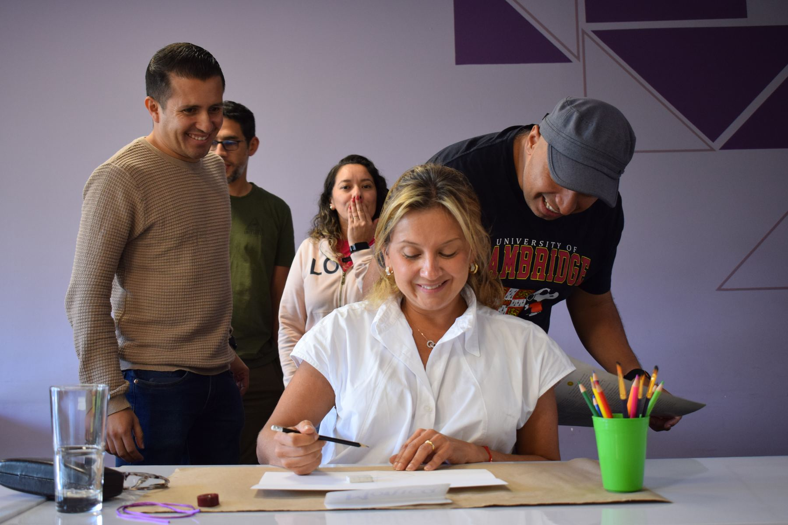
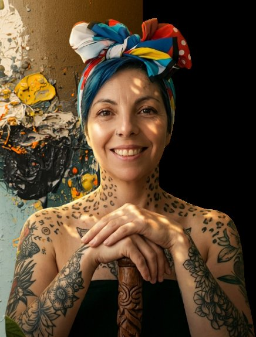

Lo que escuchamos
Un portafolio sólido que merece comunicarse con más claridad
Entorno & Compañía IPS tiene 29 años de trayectoria. En las conversaciones con la dirección aparecieron cuatro necesidades.
Cotizar más rápido
Propuestas más dinámicas, rápidas de crear y con el valor agregado visible para el cliente.
Venta consultiva
Pasar de vender servicios a resolver necesidades, con un método que el equipo pueda seguir.
Todos los roles cuentan
Una cultura de servicio en la que cada persona, desde quien contesta el teléfono hasta la dirección, es parte de la experiencia del cliente.
Posicionar Huoli
El programa estrella necesita una oferta clara y presencia en los canales digitales.
Primeros avances del diagnóstico
El sitio tiene buen contenido técnico, pero todavía no vende
Ya revisamos 8 páginas de entornoycia.co y los perfiles de LinkedIn e Instagram. El sitio describe servicios en vez de responder lo que pregunta el comprador: qué gano, cuánto toma y cómo empiezo.
El análisis completo se entrega en el periodo 1, con la información interna de Entorno.
Activos de confianza que hoy no se aprovechan
- 29años de operación desde 1997
- 168ciudades y municipios de cobertura
- 1centro médico propio en el norte de Bogotá
- 5testimonios de clientes que no aparecen donde se toma la decisión
Consideraciones importantes
Estos puntos se pueden atender pronto y tienen efecto directo en la confianza del cliente y en las ventas.
Algunos de estos ajustes se convierten en las primeras pequeñas victorias del periodo 1.

Nuestra propuesta
Una oferta clara, herramientas propias y un equipo formado
Trabajamos con el modelo experiencial de Simoné: se aprende haciendo. Cada sesión produce algo que el equipo usa al día siguiente, y cada capacitación parte de casos reales de la IPS.
- Ordenar el portafolio y la oferta comercial, incluido Huoli, para que cada servicio se entienda en un minuto.
- Diseñar herramientas comerciales que hagan las propuestas más rápidas y con el valor agregado visible.
- Formar al equipo en servicio al cliente y en la información clave de la marca.
- Dejar un plan de comunicaciones externas e indicadores para seguir midiendo.
Qué incluye
Cuatro componentes durante toda la consultoría
Reuniones de trabajo
Sesión con la dirección y los responsables de cada tema para avanzar el plan, revisar entregables y tomar decisiones, según el horario acordado.
Capacitaciones con el equipo
Talleres vivenciales para bajar la información clave de la marca y capacitar en servicio al cliente y venta consultiva.
Acomodamiento estratégico y táctico
Ordenar la oferta, los mensajes y los procesos comerciales y de comunicación externa; definir prioridades y la ruta para lograrlas.
Diseño de herramientas comerciales
Portafolio, oferta en niveles, plantilla de propuesta modular, encuestas de perfilación B2B y B2C, guion de venta consultiva e instructivos para usuarios, publicados como enlaces.
Cada periodo cierra con una revisión de avances con la dirección y los entregables acordados.
Ruta de trabajo
Cinco periodos, del 25 de noviembre de 2026 al 10 de mayo de 2027
El trabajo arranca el 25 de noviembre (día cero) con una pausa por las fiestas de fin de año del 26 de diciembre al 9 de enero. Tres líneas corren al mismo tiempo: el trabajo de cada periodo, el plan Huoli y dos capacitaciones al mes con el equipo.
Reunión con la directora
- Validar el diagnóstico externo, la visión y las prioridades (dinámica de tarjetas).
Acta de acuerdos y cronograma ajustado (en 5 días hábiles)
Diagnóstico y pequeñas victorias
- Revisar los canales de comunicación externa.
- Revisar las plantillas de cotizaciones, de comunicados y los instructivos para usuarios.
- Auditoría de activos digitales: web, redes, WhatsApp, correo, portal de citas y Google.
- Definir pequeñas victorias y herramientas digitales para mejorar procedimientos.
- Levantar la línea base y entrevistar clientes.
Informe de auditoría y diagnóstico y lista de pequeñas victorias ejecutadas o en curso
Sin sesiones de trabajo por las fiestas de fin de año.
Portafolio y oferta comercial
- Seguir trabajando el portafolio de Entorno.
- Construir las herramientas para perfilar las necesidades de los clientes (encuestas B2B y B2C).
- Construir la oferta comercial en tres niveles: Cumplir, Gestionar y Transformar.
- Configurar GitHub y Claude para publicar páginas.
Portafolio y oferta comercial publicados como enlaces, y encuestas de perfilación listas
Kit comercial
- Plantilla de propuesta modular y biblioteca de módulos.
- Guion de venta consultiva.
- Instructivos para usuarios como enlaces.
Kit comercial completo y primeras 5 propuestas enviadas con el modelo nuevo
Canales digitales
- LinkedIn e Instagram: perfiles, línea gráfica, calendario de contenidos y voceros.
- Preparar y hacer el lanzamiento digital del programa Huoli.
Canales digitales renovados y lanzamiento digital de Huoli
Medir y transferir
- Plan de comunicaciones externas a 12 meses.
- Tableros de indicadores de la IPS y de Huoli.
- Primer comité comercial.
- Resultados frente a la línea base.
Informe de resultados, tableros funcionando y plan de continuidad a 6 meses
Plan Huoli en paralelo
Huoli avanza todos los meses para llegar al periodo 4 listo para el lanzamiento digital.
| Periodo | Trabajo en Huoli | Resultado |
|---|---|---|
| 1 · nov – dic | Diagnóstico del programa: oferta actual, empresas atendidas, resultados, inversión y casos | Línea base de Huoli |
| 2 · ene – feb | Empaquetar Wellbeing, Care y Family: fases, entregables, duración e inversión de referencia | Fichas de Huoli publicadas como enlaces |
| 3 · feb – mar | Propuesta comercial de Huoli y lista de 15 empresas para el piloto | Kit comercial de Huoli |
| 4 · mar – abr | Lanzamiento digital en LinkedIn e Instagram y contacto con las empresas del piloto | Huoli lanzado |
| 5 · abr – may | Indicadores de Huoli y seguimiento al piloto | Al menos 3 empresas en conversación formal |
Capacitaciones con el equipo
Cada mes hay dos sesiones de 60 minutos con el equipo, separadas 15 días, sobre tres ejes: venta consultiva, servicio al cliente y ADN de la marca. Son 10 sesiones vivenciales en total. Las fechas sugeridas son miércoles y se ajustan con la directora.
| # | Fecha sugerida | Eje | Tema |
|---|---|---|---|
| 1 | Mié 2 dic 2026 | ADN de la marca | Nuestra historia y nuestra promesa: de 1997 a Huoli |
| 2 | Mié 16 dic 2026 | Servicio al cliente | Los momentos de verdad: el recorrido del cliente en Entorno |
| 3 | Mié 13 ene 2027 | Venta consultiva | Preguntar antes de ofrecer |
| 4 | Mié 27 ene 2027 | ADN de la marca | Todos los roles cuentan: estándares por cargo |
| 5 | Mié 17 feb 2027 | Servicio al cliente | Atención por WhatsApp, teléfono y correo |
| 6 | Mié 3 mar 2027 | Venta consultiva | Usar las encuestas de perfilación y el brief |
| 7 | Mié 17 mar 2027 | Venta consultiva | Presentar la propuesta y el valor agregado |
| 8 | Mié 31 mar 2027 | ADN de la marca | Cómo hablamos en LinkedIn e Instagram: embajadores de Huoli |
| 9 | Mié 14 abr 2027 | Servicio al cliente | Quejas, objeciones y PQRS como oportunidad |
| 10 | Mié 28 abr 2027 | ADN de la marca | Cierre: compromisos y guardianes del ADN por área |
Hitos para revisar con la directora
- 25 de noviembreDía cero: prioridades acordadas con la directora.
- 25 de diciembreAuditoría de activos digitales entregada, línea base aprobada y primeras pequeñas victorias ejecutadas.
- 10 de febreroPortafolio, oferta comercial y encuestas de perfilación publicados.
- 10 de marzoPrimera propuesta enviada por enlace con el modelo nuevo.
- 10 de abrilHuoli lanzado en LinkedIn e Instagram.
- 10 de mayoPrimer comité comercial con datos reales, 10 capacitaciones realizadas y plan de continuidad entregado.
Lo que puede mover el calendario: que la información interna no llegue antes del 6 de diciembre o que cambien los acuerdos con la marca. Las fechas y los entregables se ajustan con la directora en cada cierre de periodo. Este cronograma es una propuesta y está sujeto a los acuerdos con la marca.
Alcance y corresponsabilidades
Simoné diseña, forma y entrega las herramientas; la operación comercial y sus resultados son de Entorno
Acompañamiento comercial, metas de ventas ni búsqueda de equipo comercial
- La consultora no asiste a reuniones de venta, no gestiona clientes ni hace seguimiento a oportunidades.
- Los indicadores de resultados en ventas son responsabilidad del equipo comercial de Entorno.
- La búsqueda, selección, contratación e inducción de personal comercial.
- Designar a una persona de enlace para el proyecto.
- Entregar la información solicitada en las fechas acordadas.
- Dar tiempo al personal para asistir a las capacitaciones.
- Validar precios, mensajes y textos legales antes de publicarlos.
Quién acompaña
Una consultora con 16 años diseñando procesos de transformación humana

Consultora líder
Nathalia Andrea Velasco Duarte
CEO y fundadora de Simoné · Profesional en Estudios y Gestión Cultural
Estratega en procesos de transformación humana con 16 años de trayectoria diseñando y liderando proyectos interdisciplinarios que integran la educación, las artes plásticas y la gestión cultural. Desde 2013 lidera Simoné, la agencia pedagógica que diseña experiencias de formación y bienestar para empresas con un modelo de educación experiencial: se aprende haciendo, no escuchando.
Ver perfil en LinkedIn →Empresas que han confiado en Simoné


Alcance de la inversión
Qué incluye cada mes
- Reuniones1 sesión de trabajo semanal de 3 horas, según horario acordado
- Capacitaciones2 capacitaciones mensuales de 60 minutos con el equipo
- EstrategiaAcomodamiento estratégico y táctico de la oferta, los mensajes y los procesos
- HerramientasDiseño de las herramientas comerciales del periodo
Inversión mensual
$2.950.000 + IVA
IVA (19 %): $560.500 · Total mensual con IVA: $3.510.500
Factura de Simoné
La factura la emite Simoné, a nombre de Nathalia Andrea Velasco Duarte.
Resultados de ventas
No incluye acompañamiento comercial. Los indicadores de ventas son responsabilidad del equipo comercial de Entorno.
Próximos pasos
Cuatro pasos para empezar el 25 de noviembre
Aprobar esta propuesta.
Confirmar el horario de la reunión semanal y las fechas de las capacitaciones.
Designar a la persona de enlace de Entorno.
Reunión de diagnóstico con la directora el 25 de noviembre de 2026.
Preguntas que necesitamos resolver
Estas preguntas guiarán la reunión de diagnóstico.
- ¿Qué la hace sentir más orgullosa de estos 29 años?
- Si en 3 años Entorno fuera un éxito, ¿qué dirían sus clientes de la empresa?
- La visión de la empresa estaba escrita «al 2026». ¿Qué se cumplió y qué queda pendiente?
- ¿Qué servicios generan hoy la mayor parte de los ingresos? ¿Cuáles dejan más margen?
- ¿Quiénes son sus 5 clientes más importantes y por qué se quedan?
- ¿Qué espera de Huoli: que sea un producto propio, un valor agregado para clientes de exámenes, o ambas cosas?
- ¿Cuánta capacidad libre tiene la sede y el equipo extramural?
- ¿Cómo llega hoy un cliente nuevo? ¿Quién lo atiende y quién hace la cotización?
- ¿Cuánto tarda una cotización y cuántas se cierran?
- ¿Por qué se perdió la cotización que trajo?
- ¿Qué valor agregado siente que el cliente no ve hoy?
- ¿Qué conductas del equipo reflejan mejor el espíritu de Entorno? ¿Cuáles quisiera cambiar?
- ¿Qué rol cree que el cliente subvalora, pero es clave en su experiencia?
Para completar el diagnóstico necesitamos algunos datos internos del comportamiento de las redes sociales. Las capturas de pantalla sirven.
- Instagram (Meta Business Suite), últimos 90 días: alcance, interacciones, publicaciones con mejor resultado y datos de la audiencia.
- Página de LinkedIn (vista de administrador): visitantes, impresiones y crecimiento de seguidores.
- Sitio web: datos de Google Analytics, Search Console o Perfil de Empresa en Google, si los tienen.
- Gestión de redes: quién maneja hoy las redes y con qué frecuencia publica.
Que cada servicio se entienda y se elija
Gracias por la confianza, Dra. Leyla.
nathalia@experienciasimone.comexperienciasimone@gmail.com321 773 8039